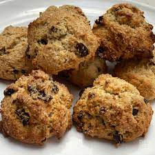

Rock Cakes
Home

Description
As the name suggests these cakes resemble rocks in both form and texture.
Grandma's favourite when we went on holiday, these cakes are similar to Lembas Bread, they will keep for days.
Ingredients
- 225g self-raising flour
- 75g caster sugar
- 1 tsp baking powder
- 125g unsalted butter
- 150g of dried fruit
- 1 egg
- 1 tbsp milk
- 2 tsp vanilla extract
Instructions
- Pre-heat oven to 160C
- Mix dry ingredients
- Add butter using the rubbing method
- Mix wet ingredients together in a seperate bowl
- Add to dry and mix until it's a lumpy dough
- Place a good dolop on a tray for each cake
- Bake for 15-20 minutes